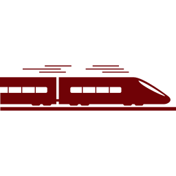
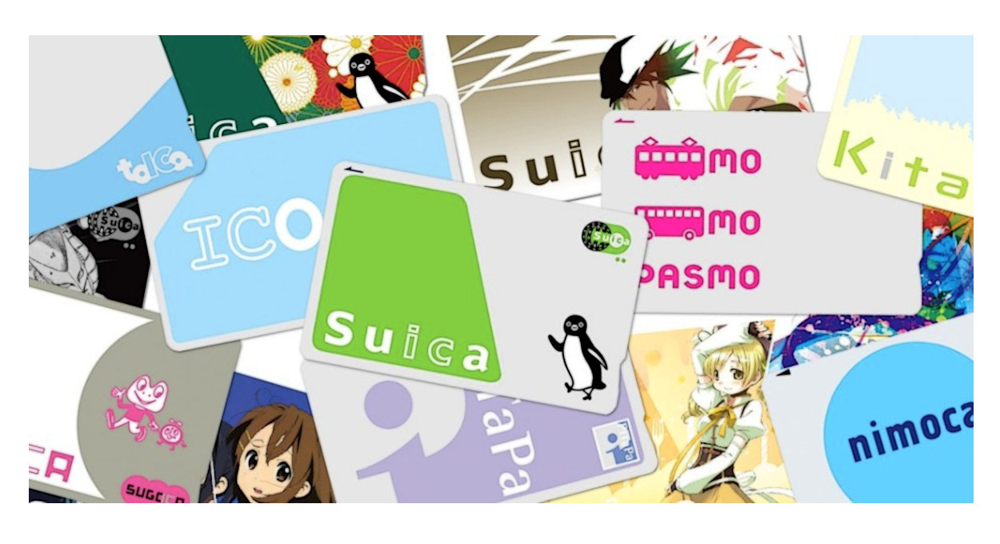

Transportation Details
Kyoto offers a variety of transportation options to help you navigate the city efficiently:
Public Transportation
Buses
Kyoto City Bus and Kyoto Bus cover extensive routes. A one-day pass is cost-effective for tourists and frequent travelers.
Click Here for more!!
Kyoto City Bus and Kyoto Bus cover extensive routes. A one-day pass is cost-effective for tourists and frequent travelers.
Click Here for more!!

Subways
The Karasuma Line and the Tozai Line are the main subway lines, connecting major parts of the city.
Click Here for more!!
The Karasuma Line and the Tozai Line are the main subway lines, connecting major parts of the city.
Click Here for more!!
JR Lines
The JR Kyoto Line and other JR services connect Kyoto to neighboring cities.
Click Here for more!!
The JR Kyoto Line and other JR services connect Kyoto to neighboring cities.
Click Here for more!!
Travel Cards

PASMO, SUICA, ICOCA and more!
A prepaid card for easy access to buses, trains, and convenience stores. Click Here for more!!